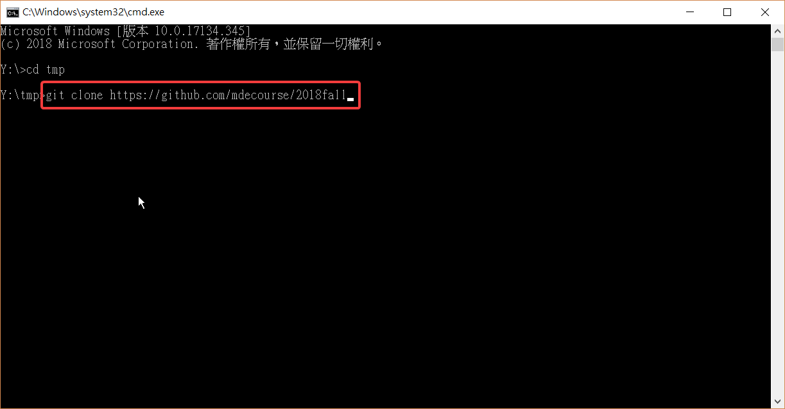
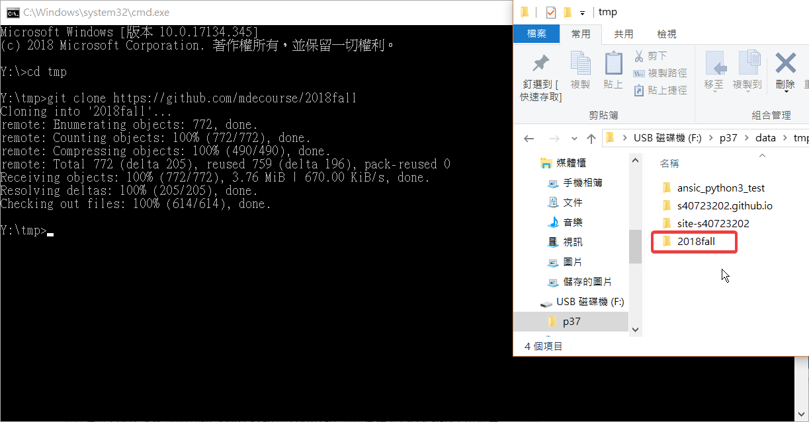

首先建立github帳號，新增倉儲: s40723202.github.io
接著用git clone指令將網址clone下來：
git clone https://github.com/mdecourse/2018fall
git clone https://github.com/s40723210/s40723210.github.io
再從2018fall資料夾複製裡面的檔案，排除.git和README.md，貼到自己的資料夾內

(圖片可按滑鼠右鍵，新增新分頁，即可放大。)
接著使用下列指令
1. git status 檢查狀態
2. git add .新增
3. git commit -m "名稱" 提交
4. git push 推送
上傳遠端完成後，就會再https://github.com/mdecp2018/site-s40723202看到上傳的檔案
老師示範影片